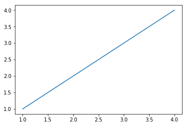

Line Plots using Matplotlib
- Mar 4 • 3 min read
- Key Terms: line plot, datetime
Import Modules
import matplotlib.pyplot as plt
from datetime import datetime
% matplotlib inline
Generate a Simple Line Plot
We call the plot method and must pass in at least two arguments, the first our list of x-coordinates, and the second our list of y-coordinates.
plt.plot([1, 2, 3, 4], [1, 2, 3, 4]);

We plotted 4 points with a line connected through them.
Generate a Line Plot from My Fitbit Activity Data
More often, you'll be asked to generate a line plot to show a trend over time.
Below is my Fitbit activity of steps for each day over a 15 day time period.
dates = ['2018-02-01', '2018-02-02', '2018-02-03', '2018-02-04',
'2018-02-05', '2018-02-06', '2018-02-07', '2018-02-08',
'2018-02-09', '2018-02-10', '2018-02-11', '2018-02-12',
'2018-02-13', '2018-02-14', '2018-02-15']
steps = [11178, 9769, 11033, 9757, 10045, 9987, 11067, 11326, 9976,
11359, 10428, 10296, 9377, 10705, 9426]
Convert Strings to Datetime Objects
In our plot, we want dates on the x-axis and steps on the y-axis.
However, Matplotlib does not allow for strings - the data type in our dates list - to appear as plots.
We must convert the dates as strings into datetime objects.
Code Explanation
We'll first assign the variable dates_list to an empty list. We'll append our newly created datetime objects to this list.
We'll iterate over all elements in our original dates list of string values.
For each item in our list, we'll access the strptime method in our datetime module and pass in two arguments.
The first argument is our date - an item in our list.
The second argument is the datetime format. Notice how our dates originally provided are in the format year-month-day with zero-padded month and day values. This means the 2nd of the month is 02 rather than just 2. Therefore, we must tell this strptime method this format with Y for year, m for month and d for day.
dates_list = []
for date in dates:
dates_list.append(datetime.strptime(date, '%Y-%m-%d'))
We can preview the syntax of our first datetime object.
dates_list[0]
datetime.datetime(2018, 2, 1, 0, 0)
Our elements are of type datetime from the datetime module. Therefore, the type is datetime.datetime.
type(dates_list[0])
datetime.datetime
Plot Line Plot of New Data
plt.figure(figsize=(10, 8))
plt.plot(dates_list, steps);

In order to see more of the variation in steps per day, by default, Matplotlib labels the smallest x-tick at 9500 instead of simply 0.
I also called the figure method and passed in a larger than normal figure size so we could easily see the y-tick values.